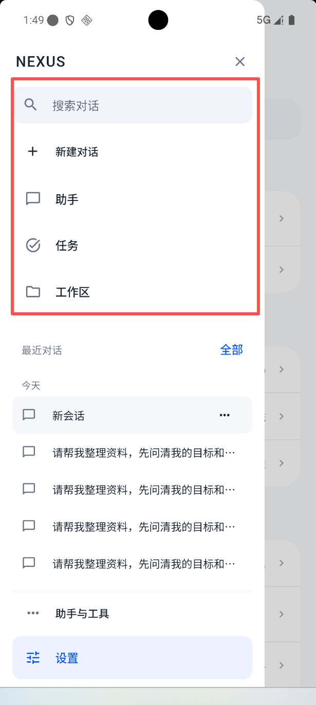

让侧栏更紧凑，把空间还给对话
建议稿：保留全部入口，收起搜索框、统一行高、减轻选中背景。本页为 HTML 布局示意，尚未修改 App。
当前截图

搜索和导航占据较多垂直空间；图标、字号与行间距偏重，最近对话出现得太晚。
建议布局 · 助手页选中状态
可点击顶栏搜索试用展开与筛选。会话标题为已有能力的排版示例；导航按钮不跳转，也不创建真实会话。
先改变信息比例
搜索缩为顶栏图标；新建对话与导航统一为 48dp 基础行高，适应大字体时自然增高。最近对话紧接导航，不留大块分隔空白。
用对齐代替装饰
图标约 20dp、导航文字 15sp、会话文字 14–15sp；同一文字起点。移除普通会话行的重复气泡图标，仅真实置顶项保留状态标记。
状态保持克制
蓝色仅强调当前入口，当前会话用浅中性灰。设置只在当前位于设置时选中；底部入口不常驻大面积蓝底。保留历史、长按操作和任务待处理提示。